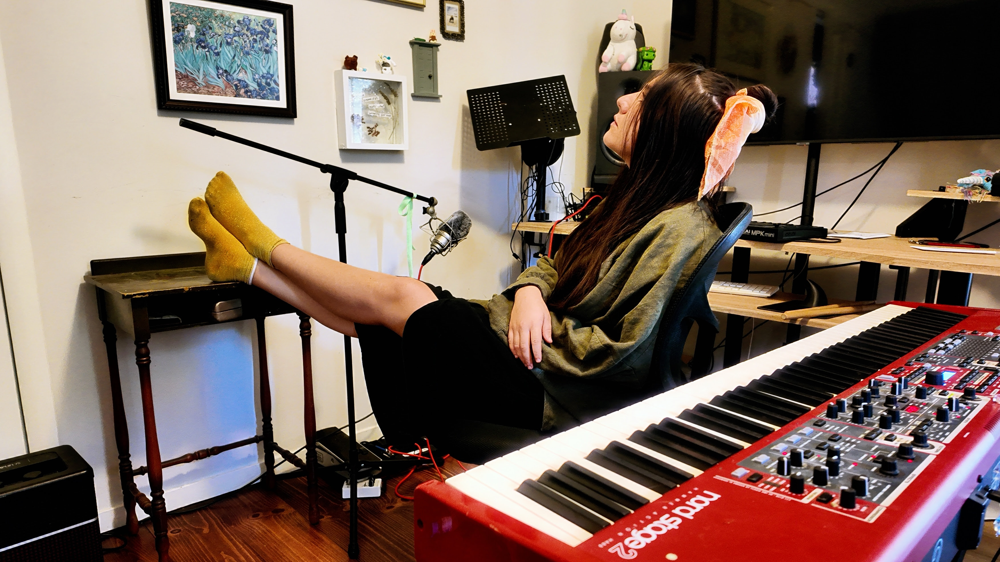

SOFÍA ÉLAN:
ARTE SIN FILTROS

Sofía Élan presenta “Cítrico”, un EP que nace desde una necesidad emocional, profunda y honesta. En este trabajo, Sofía transforma el enojo y otras emociones en una fuerza creativa, reconociendo la validez de las emociones intensas que, en ocasiones, se sienten como una jungla contenida en la yugular —o en la yugular— a punto de estallar.
A lo largo del proceso, Sofía Élan se permitió crear desde su naturaleza más auténtica. “Cítrico” fue grabado completamente en vivo junto a su círculo cercano, utilizando su propio hogar como estudio: la sala, el baño y distintas habitaciones se convierten en escenarios sonoros donde la prioridad es la captura de una energía orgánica y genuina.
DISONANCIAS Y COLOR
Este lanzamiento marca un punto de definición en su identidad creativa: una forma de componer que se aleja de fórmulas preestablecidas. Sofía Élan apuesta por la intuición, el movimiento y la vitalidad, explorando su sonido “a todo color” e influenciada por la sensibilidad de figuras como Florence and the Machine, Fiona Apple y Natalia Lafourcade.
TRACK LIST: CÍTRICO
- 01. Intro Pajarito
- 02. Cítrico
- 03. Jungla en la Yugular
- 04. Quemar
- 05. Aire (Ya no me falta)
- 06. Vete
- 07. Mi Propio Mar
VISUALES: EL UNIVERSO DE SOFÍA
